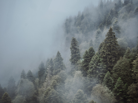
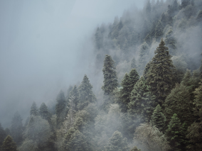

Traveling in Russia
The real country is not in the news, but here.

your shelf is medium
What didn't we see there?
According to VTsIOM polls, 95% of Russians dream of going somewhere, but only 36% plan to spend their holidays in their native country. Like, what have we not seen here at home? In fact, Russia is a whole universe with the gentle sea of the south, the dense forests of the Sayans and the harsh ice of the Putorana Plateau. And you can also see all these beauties without millions in your account, a passport and many hours of flights. Like, for example, Vera Bashmakova, a brave young mother who took three children in her arms, put them in her Lada and drove 20 thousand kilometers across her native country. We have selected and described some interesting places worthy of your vacation.
- time zones 11
- UNESCO natural heritage sites 12
- UNESCO cultural heritage sites 161
- Nature reserves 105
- Airports 105


 



Curonian spit
URL
park-kosa.ru
Here, in the middle of forests and sand dunes, you can see two water horizons - the calm Curonian Lagoon on one side and the rippling waves of the Baltic Sea on the other. A unique natural area on the edge of the Russian enclave.
The Kaliningrad region does not end there. For the traveler and researcher, there is the westernmost point of Russia, the Baltic Spit, and the German heritage of a scattering of small seaside towns in the same neighborhood. The atmosphere of these places eliminates the fuss, dipping into the tranquility of nature and the smell of steel, cool sea.
Kolskiy

Almost the entire peninsula is located beyond the Arctic Circle. Sami tundra, from which to the south - taiga, and to the north - the Arctic Ocean, pretending to be the Barents Sea.
Perhaps you watched Zvyagintsev and even heard the story of the Arctic festival in Teriberka. Perhaps the word "Khibiny" did not remain under the snow of school memories of geography lessons. Perhaps you were not interested in the ultra-deep well penetrating the earth's crust, and apathy has long covered you from apatites. But your dream of seeing the Northern Lights starts to come true with a ticket. to Murmansk.
Altai
URL
Facebook
Altai is one of the most beautiful places in Russia. First of all, because of the mountains: if you drive along the ridge, you will see slopes strewn with pine trees, mountain rivers and lakes. And if you open the windows in the car, you can get acquainted with the invisible miracle of these places - the mountain air.
The climate in Altai is temperate, so it is best to go here in summer. So you will see all the variety of local flora and fauna. Moose roam the forests of Altai, eagles fly over the ridges, and roe deer graze on the plains. And the famous manuls are also inhabitants of the Altai Territory.
Winter Baikal

Everyone knows Baikal as the largest lake in the world. Many also know that this is the largest source of fresh water and one of the most beautiful places in Russia.
Of course, it's all true. But Baikal is still an ideal place for skiing competitions. This is a sport where the skier ties himself to the motorcycle, and the tandem tries to develop as much speed as possible on the ice. In March 2019, at the Baikal Mile festival, a world record was set - 197.011 km/h.
Karelia

Siberia ends not in the Urals, but in Karelia: the Siberian larch that forms the taiga does not grow west of the Vodlozero. But here it swings up to 30 meters - the forests of the Karelian national parks, due to impenetrable swamps, have never known an ax. Some pines are more than half a millennium old. Touch a living creature that saw the sun before Ivan the Terrible saw it. In the virgin forest for a hundred kilometers you will not find a path. And on rare paths trees a couple of meters from the ground are marked with bear claws. Let everyone know who's boss.
 To Baikal "on dogs"
Based on the educational topic about the Trans-Siberian Railway - a journey from the capital to Baikal by electric trains.
To Baikal "on dogs"
Based on the educational topic about the Trans-Siberian Railway - a journey from the capital to Baikal by electric trains.